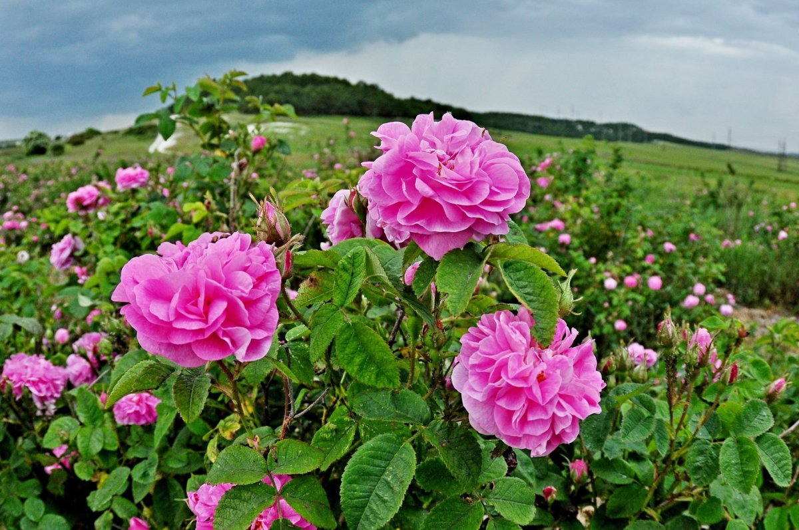
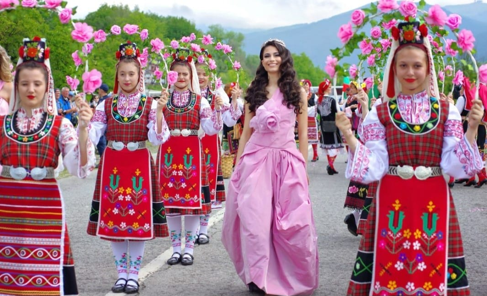
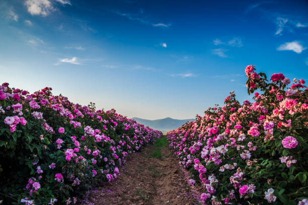

 It is no coincidence that the rose is one of the symbols of Bulgaria. It can even be called the country's national wealth. Here, this flower is not only popular, it has long been grown on an industrial scale for oil production. Rose oil is not made from any variety, but only from oilseed varieties - these are shrubs 1.5 meters high. It is a precious product that other countries are willing to buy for a lot of money. It is widely used in cosmetology, perfumery and even medical purposes. Bulgarians make many products based on it: soap, cream, shampoo, lotions, perfumes, wine and even sweets. And unusual jam and even tea are prepared from the petals. A bit history of processing rose. Even before the liberation of Bulgaria from the Ottoman yoke, Kazanlak and Karlovo were famous for producing and processing rose petals. But only in the 30s of the last century, did the authorities realise that the chic rose gardens, architecture and natural beauty of the area could be of interest to tourists. On the streets, endless floral wreaths adorn pillars, windows, balconies and doors. The houses are as lavishly decorated as the churches and squares. Dexterous young men and women, festively dressed, hold huge baskets with multi-coloured roses in their hands and distribute them free of charge to all guests, saying, “Welcome!”.

The tradition of choosing the “Queen of the Rose” appeared in Karlovo in 1975. Then, on June 15, for the first time in the holiday's history, there was the Rose of the holiday (or the Queen of the Rose) - the schoolgirl Stefka Harlova. A grand performance was organised at the city stadium, with folk songs and dances, rose water, and a helicopter that sprinkled the guests with rose water from above. A reenactment of this lavish celebration can be seen in the film "Avalanche". In Bulgaria, in one of the mountainous regions of Stara Planina, there is the famous Rose Valley, where there are entire plantations of these flowers. Tourists worldwide come here in spring to admire the blooming roses and visit an unusual holiday. Indeed, at the end of May, a colourful festival dedicated to the collection of rose petals is held here - Rosober. Its centres are the cities of Kazanlak and Karlovo. At this holiday, tourists can watch how petals are picked, rose wreaths are woven, a parade of participants occurs here, various artists and groups perform, the Queen of Roses is chosen, and beautiful dance events are organised. Undoubtedly, visiting Bulgaria during the Rose Festival can give the most vivid and unforgettable experience.
Click here for more information about Valley of Roses in Bulgaria!
 Another good tradition of the Bulgarians is the giving of gifts. The main rule - in the first place is a sign of attention, and not the material value of the estate. In Bulgaria, it is customary to give gifts for the holidays and when visiting guests. And one more feature - it is expected to open gifts immediately after giving. Summarise, undoubtedly, the peculiarities of the culture of Bulgaria are fascinating. And to study them is engaging and valuable for absolutely every person.